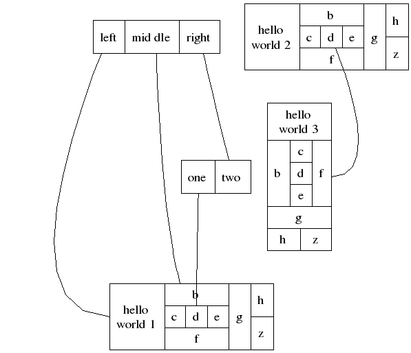

Graphs
Graph Attributes
Attributes required for graph layout and graph rendering are always stored as key-value pairs in the form: g[key] or g.key, Only strings are allowed as keys. Any number of user defined string attributes, which are not necessarily used by the graphviz library can be set.
With it's creation each graph or subgraph automatically receives one of the following read-only attributes.
| Attribute Key | Value Type | Description | Notes |
| nnodes | number | Number of nodes contained in the given graph | |
| nedges | number | Number of edges contained in the graph | |
| name | string | Name of the graph | |
| root | graph userdata | Parent graph | next higher in the hierarchy |
| parent | graph userdata | Root graph | highest in the hierarchy |
| isstrict | boolean | true if graph is strict | |
| isdirected | boolean | true if graph is directed | directed graphs are the default |
| isroot | boolean | true if graph is the root graph | |
| graph | graph userdata | Graph to which the given subgraph belongs | trivial for graphs because it returns the graph itself |
| id | number | Graphviz internal unique id |
Graph Methods
g:close()
Closes graph g. All graph objects contained in the graph are deleted as well. Note, that proxy object references to these graph objects are invalidated and their subsequent usage produces errors.
sg, err = g:cluster(NAME,
ATTRIBUTES, NOCREATE)
sg, err = g:cluster(PARAM)
The first form creates or retrieves a cluster with name NAME and sets the given ATTRIBUTES. The function adds the prefix "cluster_" to the given NAME. This prefix instructs LuaGRAPH to encapsulate the subgraph into a surrounding box. If the flag NOCREATE is true, the function will not create the subgraph if it does not already exist.
The second form does basically the same, but provides a different and more advanced syntax. The first numeric element of PARAM is taken as the name for the node, the second element is the nocreation flag. All non-numeric elements are interpreted as attributes.
The function returns nil plus an error message if the node could neither be found nor created.
attributes = g:defaults()
Returns default values for graph objects in graph g. The result is returned as nested table containing 3 subtables indexed as "graph", "node" and "edge". Each subtable contains the default attributes as key-value pairs:
{graph={ATTR, ...}, node={ATTR, ...}, edge = {ATTR}}
result = g:declare(ATTRIBUTES)
Declares attributes and their default values for the given graph g. Attributes are given as nested table containing 3 subtables indexed as "graph", "node" and "edge". Each of these subtables contains the declarations as key-value pairs.
The attribute table has the following form:
{graph={ATTR, ...}, node={ATTR, ...}, edge = {ATTR}}
The function returns the number of attributes set.
result = g:delete(OBJECT)
Deletes the given OBJECT, which must be a valid Lua userdata representing a graph, node or edge object. If OBJECT is a graph then all nodes and edges within that graph are deleted as well. If object is a node, all edges to or from this node are deleted as well. If object is an edge, only the edge is deleted. Lua userdata associated to the graphviz objects are invalidated and eventually deleted during carbage collection.
The function always returns 0.
e, tail, head = g:edge(TAIL, HEAD [,
LABEL [, NOCREATE]])
edges, nodes= g:edge(PARAM)
Creates or retrieves one or multiple edges connecting two or more nodes. The first form connects node TAIL with node HEAD. The nodes can be specified by name or via a userdata reference. The parameter LABEL is optional. If provided it defines the label for the edge. The edge automatically receives the name "edge@<id>". If NOCREATE is set to true the function will not try to create the edge if does not exist.
The function returns a userdata reference to the edge, the tail node and the headnode. In case of failures, the function returns nil plus an error message.
The second form connects multiple nodes and also creates multiple edges. Numeric elements in table PARAM are interpreted as nodes. They can be given by name or as a userdata reference. Non-numeric elements of table PARAM are interpreted as attributes for each edge, that is created.
Example:
e, tail, head = g:edge("tailnode", headnode, "tail=>head")
edges, nodes = g:edge{"tailnode", midnode, headnode, label="tail=>head"}
attributes = g:getattr()
See g.defaults().
n, err = g:findnode(NAME)
Retrieves userdata reference of a node with NAME in graph g. Returns nil plus an error message if the node could not be found.
e, err = g:findedge(TAIL, HEAD, LABEL)
Retrieves userdata reference of an edge with LABEL between the nodes TAIL and HEAD. The nodes can be given as either userdata references or by name. Returns nil plus an error message if the edge could not be found.
n, err = g:idnode(ID)
Retrieves userdata reference of an node identified by a numeric ID. Returns nil plus an error message if the node could not be found.
result, err = g:layout(ENGINE)
Generates a layout of graph g using the algorithm defined by ENGINE, which takes one of the following string values:
-
- dot
- directed graph layout. This is the default algorithm.
- neato
-
- undirected graph layout using spring models
- fdp
-
- undirected graph layout using the spring model
- circo
-
- circular graph layout, where nodes are placed in a circle
- twopi
-
- radial graph layout
- nop, nop2
-
- undirected graph layout like neato, but assumes the graph has position attributes attached.
During the layout all objects within the graph and the graph itself receive new attributes which represent the drawing coordinates.
Note, that the layout can be performed only ONCE per graph. Any attempt to layout the graph after a layout has already been generated leads to an error.
The function returns nil plus an error message in case of failures, e.g. if the requested layout already exists.
sg = g:nextgraph(LAST)
Iterator retrieving the next subgraph of graph g. If the parameter LAST is nil, the first subgraph is returned. If LAST is a valid subgraph (userdata) the next instance is returned. The function can be used standalone, but is mainly provided to be returned as iterator function from g:walkgraphs().If no subgraph can be found the function returns nil.
n = g:nextnode(LAST)
Iterator retrieving the next node of graph g. If the parameter LAST is nil, the first node is returned. If LAST is a valid node (userdata) the next instance is returned. The function can be used standalone, but is mainly provided to be returned as iterator function from g:walknodes().
If no subgraph can be found the function returns nil.
n, err = g:node(NAME, ATTRIBUTES
[,NOCREATE])
n, err = g:node(PARAM)
The first form creates or retrieves a node with name NAME and sets the given ATTRIBUTES. If the flag NOCREATE is true, the function will not create the node if does not already exist.
The second form does basically the same but provides a different syntax. The first numeric element of PARAM is taken as name for the node, the second element is the nocreation flag. All non-numeric elements are interpreted as attributes.
The function returns nil plus an error message if the node could neither be found nor created.
Examples:
n, err = g:node("N1", {color="blue"})
n, err = g:node{"N2", color = "blue", false, shape = "circle"}
result = g:rawget(KEY)
Retrieves an attributes from a graph object g without using Lua metamethods. Attributes are always returned as strings. Only attributes in the graphviz library's directories are searched.
The function returns nil if no attributes with KEY could be found.
n, err = g:record(NAME,
BOX, ATTRIBUTES [, NOCREATE])
n, err = g:record(PARAM)
The first form retrieves or creates a record of name NAME and sets the given ATTRIBUTES. If the flag NOCREATE is true, the function will not create the record if does not already exist.
The second form does basically the same but provides a different syntax. The first element with a numeric key (PARAM[1]) is taken as name for the node, the second element with numeric index (PARAM[2]) is the BOX (see below) description and the third element with numeric index (PARAM[3]) is the nocreation flag. All non-numeric elements are interpreted as attributes.
The parameter BOX is a function that constructs a graphviz compatible format of a node label which allows the layout engine to create the graphical representation of a record.
Luayats provides the two functions graph.vbox(...) and grap.hbox(...) which can be directly used to satisfy the parameter BOX. By using hbox as paramter to vbox and vice versa it is possible to construct a valid node description in a hierarchical manner. Both functions take a list as parameter. Each element of this list is either a visible port label (string element) or another vbox or hbox. The field within a vbox are placed top to down, while the elements in a hbox are place left to right. Using the string "<PORT>" plus the ports visible label, assigns PORT as the name of the port. Edges can then be instructed to end at the port instead of the complete node (record). Specifying ports is optional.
The usage of the BOX functions are best explained using an example:
local gr = require "graph"
--
-- Define the graph
--
local g = gr.graph{"G",
-- Need 'record' as shape attribute
node = {shape = "record"},
-- Classical graphviz record definition
gr.node{"n1",
label="<f0> left|<f1> mid\\ dle|<f2> right"};
gr.node{"n2",
label = "<f0> one|<f1> two"},
gr.node{"n3",
label = "hello\\nworld 1|{ b |{c|<here> d|e}|f}|<g> g|{h|z}"},
gr.edge{"n1:f2", "n2:f1"},
gr.edge{"n1", "n3"},
gr.edge{"n2:f0:n", "n3:here:sw"},
gr.edge{"n1:f0", "n3:w"},
-- Luayats record definition using vbox and hbox function
gr.record{"n4",
gr.hbox{
"hello\\nworld 2",
gr.vbox{
"b",
gr.hbox{"c", "<here> d", "e"},
"f"
},
"<g> g",
gr.vbox{"h", "z"}
}
},
-- Same elements but starting top to down
gr.record{"n5",
gr.vbox{
"hello\\nworld 3",
gr.hbox{
"b",
gr.vbox{"c", "<here> d", "e"},
"f"
},
"<g> g",
gr.hbox{"h", "z"}
}
},
-- Connect two ports
gr.edge{"n4:here", "n5:e"}
}
--
-- Layout using 'dot' (default) engine
--
g:layout()
g:write()
--
-- Render into different formats
--
g:render("pdf", "out.pdf")
g:render("gif", "out.gif")
g:render("svg", "out.svg")
g:render("jpg", "out.jpg")
g:render("png", "out.png")
g:show()
--
-- That's it
--
g:close()
This script constructs the following graph:

result, err = g:render(RENDER_FORMAT, FILE [,LAYOUT_FORMAT])
The function renders a graph that has been layed out. The string parameter RENDER_FORMAT defines one of the following output formats:
macbookpro:luagraph.git leuwer$ lua -l graph -e 'for _,v in pairs(graph.plugins()) do io.stdout:write(v.." ") end print()' cairo dot dot_json fig gd json json0 lasi map mp pic pov ps quartz svg tk vml vrml xdot xdot_json
If format is omitted the function will produce a plain text output. The rendered graph is written to FILE. If FILE is nil the graph is written to stdout.
The function can be used multiple time to produce different output formats of a graph layout.
The function returns a non-nil value upon success and nil plus an error message in case of errors.
result = g:setattr(ATTRIBUTES)
See g.declare()
sg, err =
g:subgraph(NAME, ATTRIBUTES, NOCREATE)
sg, err = g:subgraph(PARAM)
The first form creates or retrieves a subgraph with name NAME and sets the given ATTRIBUTES. If the flag NOCREATE is true, the function will not create the subgraph if does not already exist.
The second form does basically the same but provides a different and more advanced syntax. The first numeric element of PARAM is taken as name for the node, the second element is the nocreation flag. All non-numeric elements are interpreted as attributes.
The function returns nil plus an error message if the node could not be found or not created.
Examples:
n, err = g:subgraph("SG", {color="blue"})
n, err = g:node{"N2", color = "blue", false, shape = "circle"}
result = g:show()
Renders the given graph using the "gtk" rendering engine, which produces an antialiased graph in a GTK canvas. The function ends when the window is closed and returns a non-nil value upon success and nil plus an error message in case of errors.
Note:
For graphviz version lower than 2.10, which does not yet provide the "gtk" rendering engine the function will silently calls g:showdotty() and returns the corresponding results of this function.
See also g.render().
result = g:showdotty(DOIT)
Displays the given graph using the "dotty" program that comes with the graphviz package. The function first layouts and renders the graph into a temporary file using the DOT format and then passes this file to the dotty program using the Lua standard functionos.execute(...)
The function forwards the error code of os.execute(...).
result = g:type()
result = object:type()
You can apply the type() function to any graph object. The function returns the type of the object as string. In the special case of graphs the function returns the string "graph". Passing an invalid object to this function raises an error. For nodes and edges the call returns "node" and "edge", respectively.
iterfunc, state, nil = g:walkgraphs()
This iterator function returns a subgraph of the given graph each time it is called. In fact it returns the following triple: getnext(), g, nil for usage in Lua's generic "for loop".
If no more subgraph can be found the function returns nil.
Example:
for sg in g:walkgraphs() do print(sg.name) end
iterfunc, state, nil = g:walknodes()
This iterator function returns a node within the given graph each time it is called. In fact it returns the following triple: nextnode, g, nil for usage in Lua's generic "for loop".
If no more nodes can be found the function returns nil.
Example:
for n in g:walknodes() do print(n.name) end
result, err = g:write([FILE])
Writes a graph in DOT notation into FILE, which is the name of the file. If FILE is omitted the graph is written to standard output.
The function returns a non-nil result on success and nil plus an error message in case of failures.
Graph metamethods
Comparison:
g1 == g2
Graphs and subgraphs can be compared using the == operator. The comparison returns true if the graphs are identical (have equal attributes id). It returns false otherwise.